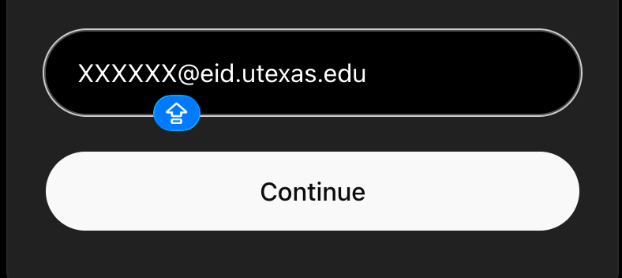
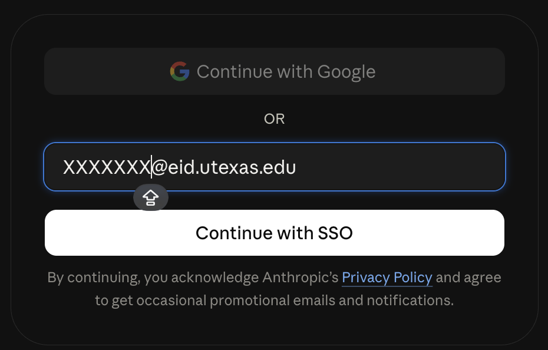
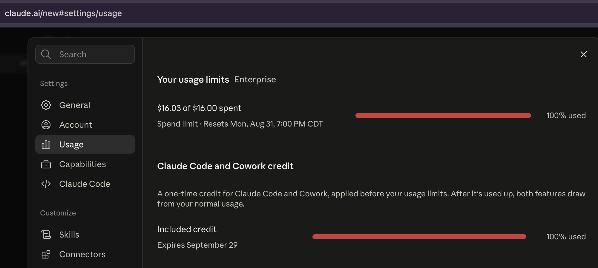

免责声明：本指南并非 UT 官方文件。使用资格、额度与申请要求请以以上官方页面为准。
UT lists free ChatGPT EDU and Claude EDU access for students, faculty, and staff. Follow the login links on UT AI Tools and sign in with [your EID]@eid.utexas.edu. That page also links to AI Studio for access requests and plan details.
UT 为学生、教职员工提供免费的 ChatGPT EDU 和 Claude EDU。请从 UT AI Tools 官方页面进入，使用 [你的 EID]@eid.utexas.edu 登录；申请入口及套餐详情见该页面的 AI Studio 链接。
The community screenshot below shows Codex access on a UT account. Check your assigned plan and workspace settings in AI Studio before relying on this feature.
下方社区截图展示了 UT 账户中的 Codex。使用前请通过 AI Studio 核实自己获分配的套餐与工作区权限。

UT GPT — Codex access
The community screenshots below show Claude login and Claude Code access. Availability depends on your assigned license; consult the Claude license information linked from UT AI Tools.
下方社区截图展示了 Claude 登录及 Claude Code。可用功能取决于获分配的许可，请查看 UT AI Tools 页面链接的 Claude 许可说明。

UT Claude — login with EID email

UT Claude — Claude Code access
UT Austin is on Kiro's eligible-school list. Verified students aged 18 or older can receive 1,000 credits each month for one year, without a credit card.
UT Austin 在 Kiro 支持的学校名单内。年满 18 岁并通过认证的学生可获一年内每月 1,000 额度，无需信用卡。
Applicants need a personal GitHub account, current enrollment in a degree- or diploma-granting program, proof of student status, and must be at least 13.
申请人须年满 13 岁、拥有个人 GitHub 账户，正在攻读学位或文凭，并提供在读证明。
Need an enrollment letter? See Texas One Stop: Verify Enrollment.
需要在读证明？请查看 Texas One Stop 的在读证明申请页面。
内容来源: UT AI Tools、Kiro Students、GitHub Education 官方文档及社区截图 | 更新时间: 2026年9月
Sources: UT AI Tools, Kiro Students, GitHub Education documentation, and community screenshots | Last Updated: September 2026
UT AI Tools · Kiro Students · GitHub Education: application requirements（申请要求）